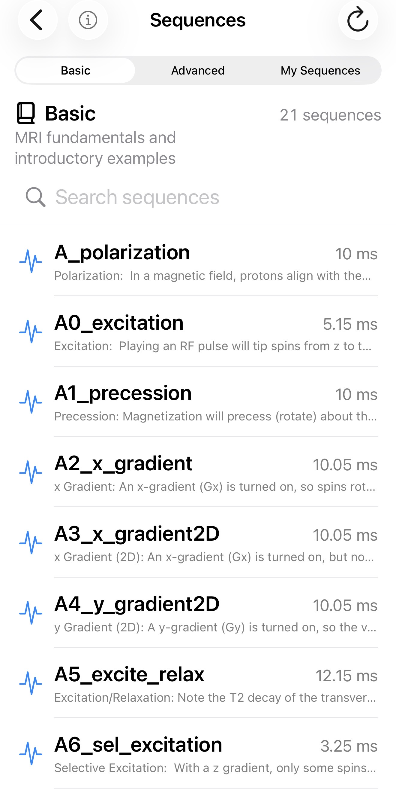

Spintuition
Spintuition Sequences
Sequences
Spintuition reads and writes Pulseq
.seq files, so sequences can move between Spintuition and other MRI tools.
Open the Sequences panel with the sequence icon at the top of the Full View. Tap a sequence to review its description, duration and spin matrix before loading it.
Sequence library
| Category | Contents |
|---|---|
| Basic | MRI fundamentals and introductory examples, bundled with the app. |
| Advanced | Complete and steady-state pulse sequences, bundled with the app. |
| My Sequences | Sequences you saved from the main view. Rename with the pencil icon, swipe left to delete, and drag to reorder with Edit. |
- Loading a sequence replaces the current waveforms and spin matrix settings.
- Replace Waveforms turns off automatically on load, so the sequence is not accidentally overwritten.
- Load at Startup in the load dialog makes a sequence load at launch (only one at a time).
- After loading, use Back to Start to replay it from the beginning.

Import scaling
When loading a Pulseq file, the Pulseq Scaling controls adapt external sequences to Spintuition’s visualization. They are applied after the waveforms are loaded:
- Scale RF — RF amplitude (default 1.0)
- Scale Gx, Gy, Gz — gradient amplitude per axis (default 1.0)
Pulseq gradients are converted from Hz/m to kHz/m. By default they are also scaled by 1/50 so that
realistic resolutions produce a few visible cycles across the 25 cm FOV (1/4 m). The
SimmrGradScale directive replaces this default.
Note that at 25cm FOV, the scaling from kHz/m to kHz/FOV is just a division by 4!
Export
Share Waveforms on the Waveforms panel exports the current
waveforms as a .seq file, including Simmr directives that restore the matrix and display
state when it is reimported.
Writing sequences in MATLAB
The bundled examples are generated with the Pulseq MATLAB toolbox (see matlab_pulseq/).
Directives can be added with setDefinition:
seq = mr.Sequence();
seq.setDefinition('#SimmrDescription', 'x Gradient: spins rotate at different rates depending on x position.')
seq.setDefinition('# SimmrMatrixSize', ' 5 1 1')
seq.setDefinition('# SimmrSpinInit', ' x')
seq.setDefinition('# SimmrT1', ' 100')
seq.setDefinition('# SimmrT2', ' 40')
seq.setDefinition('# SimmrView', ' obl')
gx = mr.makeTrapezoid('x', 'FlatArea', 20000*10e-3, 'FlatTime', 10e-3, 'system', sys);
seq.addBlock(gx);
seq.write('A2_x_gradient.seq');Simmr directives
Spintuition reads optional app-specific directives from comments in Pulseq .seq files.
Other Pulseq tools ignore these lines as ordinary comments. The prefix remains Simmr for
file compatibility.
Syntax
# SimmrMatrixSize 5 5 3
# SimmrSpinInit z
# SimmrLabFrame off- One directive per comment line. Directives may appear anywhere; placing them before
[VERSION]makes them easier to find. - Names are case-insensitive, and whitespace between
#and the name is optional. - A colon or equals sign may separate name and value; a space is canonical.
- Invalid or unknown directives are ignored. For single-value directives the last valid value wins.
SimmrSpinInitandSimmrPauseare repeatable and accumulate timed events.- Unless noted, times are in ms and frequencies in kHz, matching the app controls.
Sequence information
| Directive | Value | Effect |
|---|---|---|
SimmrDescription <text> | Nonempty text | Description shown when the sequence is loaded. May also be a [DEFINITIONS] entry; the comment takes precedence. |
SimmrID <UUID> | UUID | Stable identifier preserved across export and reimport. |
SimmrCreatedAt <date> | Unix seconds or ISO-8601 | Original creation date preserved across export and reimport. |
SimmrCategory <Basic|Advanced> | Basic / Advanced | Library category for bundled sequences; no effect on user imports. |
Spin matrix and playback
| Directive | Value | Effect |
|---|---|---|
SimmrMatrixSize <x> <y> <z> | Three integers | Spin counts along X, Y, Z (minimum 1 each). |
SimmrSpinInit <axis> [time] | x, y, z, random; optional time (ms) | Initializes all spins at time zero, or resets them at the given time. Repeat to schedule multiple resets. random randomizes orientation and magnitude. |
SimmrPause <time> | Time ≥ 0 (ms) | Pauses playback at that time. Repeat for multiple pauses. |
SimmrSS <count> | Positive integer | Prepares the initial magnetization by simulating the sequence for this many repetitions (steady state). May also be a [DEFINITIONS] entry. |
Simulation settings
| Directive | Value | Effect |
|---|---|---|
SimmrT1 <time> | ms | Longitudinal relaxation time (clamped to the app’s range). |
SimmrT2 <time> | ms | Transverse relaxation time (clamped to the app’s range). |
SimmrDf <freq> | kHz, may be negative | Uniform off-resonance frequency. |
SimmrDfr <freq> | kHz, 0–1 | Standard deviation of spatial off-resonance. |
SimmrGradScale <s> | One number | Replaces the default 1/50 display scale for Gx, Gy, Gz. Load-dialog scales still apply afterward. |
SimmrGradScale <x> <y> <z> | Three numbers | Independent display scales for Gx, Gy, Gz. |
SimmrLabFrame <on|off> | on / off | Laboratory frame when on, rotating frame when off. |
SimmrShowB1 <on|off> | on / off | Show the normalized B1 rotation-axis vector (visible only while RF is non-zero). |
Vector display
| Directive | Value | Effect |
|---|---|---|
SimmrFadeUnexcited <percent> | 0–25 | Fade Unexcited Spin slider. |
SimmrAverageXYZ <on|off> | on / off | Global XYZ average vector (suppressed for a single spin). |
SimmrAverageX <on|off> | on / off | Averages along X (suppressed when X count is 1). |
SimmrAverageY <on|off> | on / off | Averages along Y (suppressed when Y count is 1). |
SimmrAverageZ <on|off> | on / off | Averages along Z (suppressed when Z count is 1). |
SimmrTrail <duration> | ms, 0–2 | Arrow-tip trail history. |
Camera
| Directive | Value | Effect |
|---|---|---|
SimmrView <view> | ax, sag, cor, obl | Preset axial, sagittal, coronal or oblique view (full names also accepted). Takes precedence over camera vectors. |
SimmrCameraDirection <x> <y> <z> | Three numbers | Camera viewing direction. |
SimmrCameraRight <x> <y> <z> | Three numbers | Camera horizontal axis. |
SimmrCameraUp <x> <y> <z> | Three numbers | Camera vertical axis. |
SimmrCameraBasis <9 values> | Nine numbers | Compact form: direction, right, then up. |
Camera vectors are normalized when loaded, and the three separate vectors take effect only when all three are valid. Canonical presets:
# Axial — view along Z, X across, Y vertical
# SimmrCameraBasis 0 0 1 1 0 0 0 1 0
# Sagittal — view along X, Z across, Y vertical
# SimmrCameraBasis -1 0 0 0 0 1 0 1 0
# Coronal — view along Y, X across, Z vertical
# SimmrCameraBasis 0 -1 0 1 0 0 0 0 1Compatibility aliases
| Preferred | Also accepted |
|---|---|
SimmrView | SimmerView |
SimmrSpinInit | SpinSimmrInit |
SimmrTimeMultiplier appeared in older documentation but is no longer parsed;
Pulseq timing is converted to Spintuition’s millisecond timeline automatically.
Full example
# SimmrDescription Slice-selective excitation example
# SimmrID 5C57AF74-61DE-4D4B-931D-994D77D34F8A
# SimmrCreatedAt 1791475200
# SimmrMatrixSize 5 5 3
# SimmrSpinInit z
# SimmrSpinInit x 12.5
# SimmrPause 8
# SimmrSS 4
# SimmrT1 40
# SimmrT2 10
# SimmrDf -0.25
# SimmrDfr 0.1
# SimmrGradScale 0.02
# SimmrLabFrame off
# SimmrShowB1 on
# SimmrFadeUnexcited 10
# SimmrAverageXYZ on
# SimmrAverageX off
# SimmrAverageY off
# SimmrAverageZ on
# SimmrTrail 1.5
# SimmrView obl
[VERSION]
major 1
minor 5
revision 0You can download/modify the examples here.